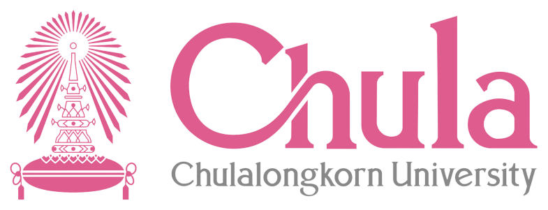
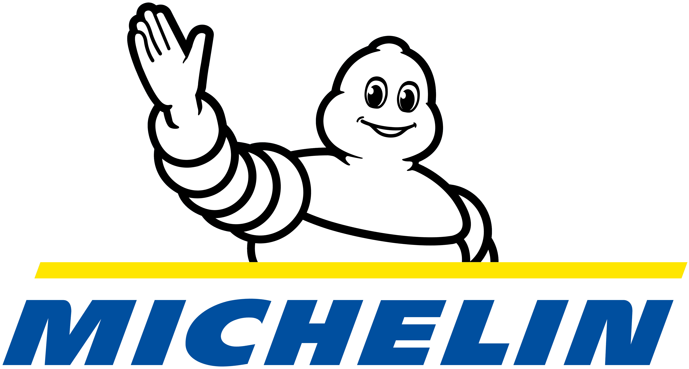
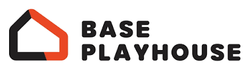
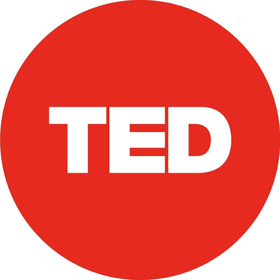
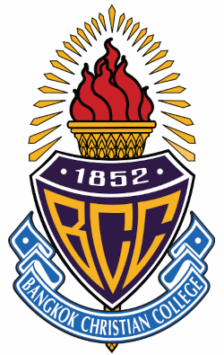
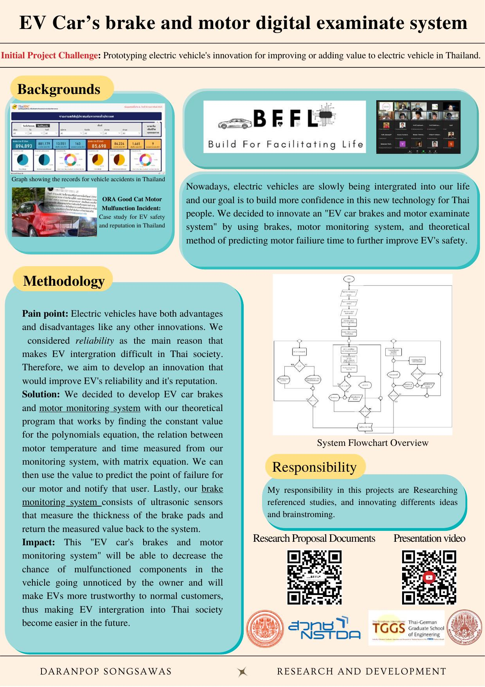

ขั้นตอนสมัคร Portfolio ให้ติดมหาวิทยาลัย
รู้ทุกสเต็ป ตั้งแต่เปิดบัญชีจนยืนยันสิทธิ์ — อัปเดต TCAS70





TCAS คืออะไร มีกี่รอบ
แต่ละรอบใช้เกณฑ์อะไรตัดสิน
สมัครได้หลายรอบ แต่ยืนยันสิทธิ์ได้ครั้งเดียว
ปฏิทิน TCAS70 คร่าวๆ
ความเข้าใจผิดที่พบบ่อย
Portfolio ต่างจากรอบอื่นยังไง
"เข้าร่วมแข่งขัน EV CUP 2021 ทีม BFFL ได้รับรางวัล Honorable Mention ระดับประเทศ หน้าที่: วิจัยกลไกยานยนต์ไฟฟ้าและการถ่ายเทความร้อนของมอเตอร์"
คนไทยยังไม่มั่นใจความปลอดภัยของรถ EV
ทีมต้องออกแบบนวัตกรรมเพิ่มความน่าเชื่อถือให้ EV ในการแข่งขันระดับประเทศ
วิจัยและออกแบบระบบพยากรณ์ความเสียหายของมอเตอร์-เบรก ด้วยสมการและเซนเซอร์จริง
ได้ Honorable Mention จาก 52 ทีมทั่วประเทศ

Situationดูช่อง "Pain point" — ปัญหาความเชื่อมั่นใน EV
Taskดูช่อง "Initial Project Challenge" — โจทย์ที่ทีมต้องทำ
Actionดูช่อง "Methodology" — ขั้นตอนที่ลงมือทำจริง
Resultดูช่อง "Impact" — ผลที่เกิดขึ้นจากงานนี้
เลือกผลงาน/กิจกรรมที่ภูมิใจที่สุด 1 เรื่อง
เติมกรอบ S–T–A–R ด้วยคำพูดของตัวเอง ไม่ต้องสวยหรู แค่จริง
อ่านออกเสียงให้เพื่อนข้างๆ ฟัง 1 รอบ
ตัดคำที่ไม่จำเป็นออก เหลือแค่ประโยคที่ทรงพลังที่สุด
จับคู่กับเพื่อนข้างๆ
คนละ 2 นาที เล่าเรื่อง STAR ของตัวเอง
เพื่อนฟังแล้วบอก 1 อย่างที่อยากรู้เพิ่ม